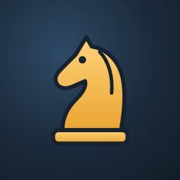

Ajedrez
Juega contra la máquina, con otra persona en el mismo móvil o resuelve problemas de mate. Gratis y sin anuncios.
⬇️ Descargar para Android
- Contra la máquina: seis niveles, de principiante a jugador de club, y modo aprendizaje con pistas.
- Dos jugadores en el mismo móvil, con reloj de ajedrez (5+0, 10+5…) si queréis.
- Análisis de cada partida: errores y mejor jugada en cada momento.
- Problemas de mate en 1, 2 y 3.
- Clasificación con Elo, historial y partidas en PGN.
- Funciona sin conexión y se actualiza desde la propia app.
Cómo instalarla: pulsa el botón, abre el archivo descargado y toca Instalar.
Si Android lo pide, permite instalar apps de esta fuente (la app no está en Google Play).